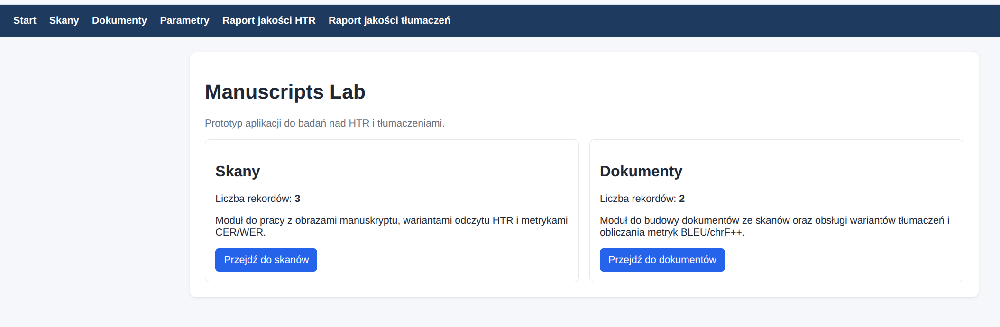
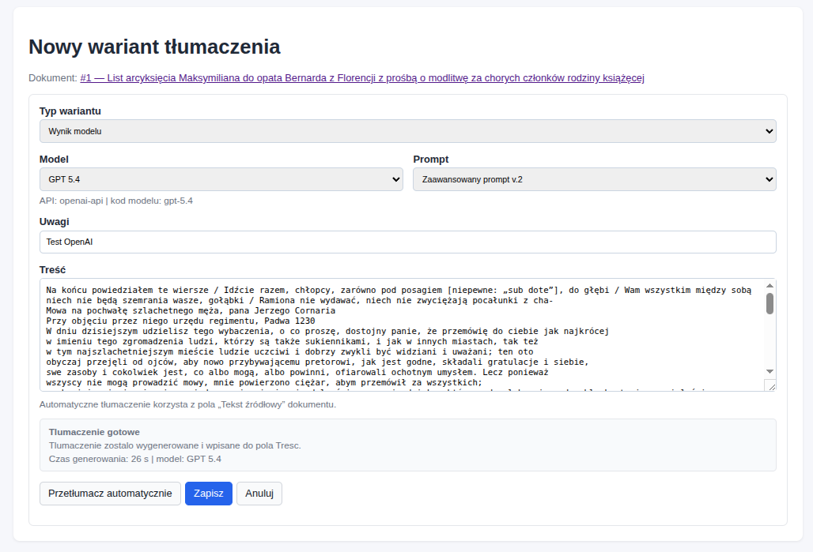
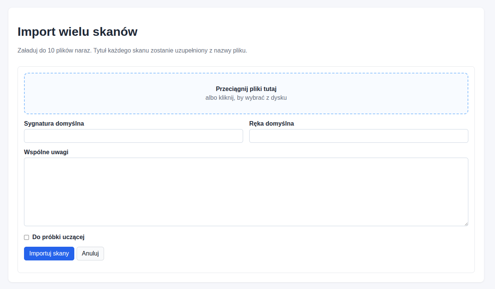
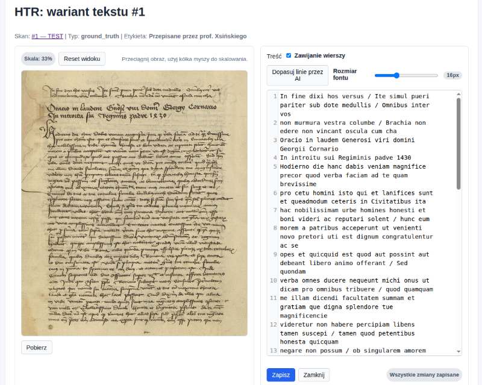
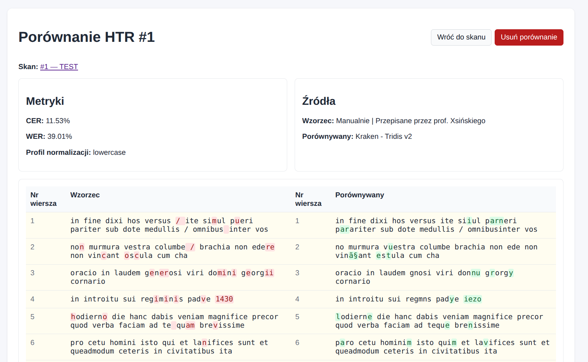

Opis aplikacji Manuscript Lab
Manuscript Lab jest aplikacją internetową przeznaczoną do organizacji pracy ze skanami manuskryptów, wariantami odczytu HTR oraz wariantami tłumaczeń dokumentów. Umożliwia zarządzanie skanami i dokumentami, porównywanie wyników rozpoznawania pisma i tłumaczeń z użyciem metryk jakości, a także przygotowywanie raportów zbiorczych. Kod źródłowy aplikacji dostępny jest w repozytorium aplikacji: https://github.com/pjaskulski/manuscript-lab.

Podręcznik użytkownika
1. Cel aplikacji
Manuscripts Lab służy do pracy ze skanami manuskryptów, wariantami odczytu HTR oraz wariantami tłumaczeń dokumentów. Aplikacja pozwala:
- gromadzić i opisywać skany,
- importować pojedyncze skany albo wiele plików naraz,
- zapisywać różne wersje tekstu dla pojedynczego skanu,
- wygodnie poprawiać tekst HTR w osobnym workspace,
- porównywać wyniki HTR z tekstem wzorcowym przy użyciu metryk
CERiWER, - łączyć skany z dokumentami,
- budować tekst źródłowy dokumentu na podstawie powiązanych skanów,
- zapisywać ręczne i automatyczne warianty tłumaczeń,
- automatycznie tłumaczyć teksty poprzez API (Google Translate, DeepL, OpenAI GPT, Google Gemini)
- porównywać tłumaczenia przy użyciu metryk
BLEUichrF++, - przygotowywać raporty zbiorcze na temat HTR i tłumaczeń, i eksportować je do
CSVlubXLSX.
Instrukcja opisuje obsługę aplikacji z perspektywy użytkownika końcowego.
2. Dostęp do aplikacji
Po uruchomieniu aplikacji użytkownik loguje się przez formularz Logowanie. Po zalogowaniu wszystkie główne widoki są dostępne z górnego menu.
Jeżeli użytkownik jest już zalogowany, w prawym górnym rogu widać jego nazwę oraz przycisk Wyloguj.
3. Menu główne
W górnym pasku nawigacji dostępne są sekcje:
Start– strona główna z krótkim podsumowaniem liczby skanów i dokumentów.Skany– baza skanów, ich metadanych oraz wariantów tekstu HTR.Dokumenty– baza dokumentów złożonych ze skanów oraz tłumaczeń.Parametry– słowniki modeli HTR, modeli tłumaczeń i promptów tłumaczeniowych.Raport jakości HTR– zbiorczy raport jakości modeli HTR.Raport jakości tłumaczeń– zbiorczy raport jakości tłumaczeń.
4. Zalecana kolejność pracy
Najwygodniejszy sposób pracy z aplikacją wygląda tak:
- Uzupełnić słowniki w sekcji
Parametry. - Dodać skan albo zaimportować serię skanów.
- Dodać do skanu tekst wzorcowy i jeden lub więcej wyników modelu HTR.
- W razie potrzeby poprawić tekst w workspace HTR.
- Wykonać porównanie HTR dla skanu.
- Oznaczyć wybrane skany jako element próbki uczącej.
- Utworzyć dokument w sekcji
Dokumenty. - Powiązać z dokumentem odpowiednie skany i ustawić ich kolejność.
- Przebudować tekst źródłowy dokumentu ze skanów (lub wgrać ręcznie)
- Dodać warianty tłumaczeń, w tym warianty automatyczne, jeśli są skonfigurowane.
- Wykonać porównania tłumaczeń.
- Przenalizować wyniki w raportach jakości i w razie potrzeby je eksportować.
5. Sekcja Parametry
Sekcja Parametry służy do prowadzenia słowników modeli i promptów. Obecne są tam trzy listy:
- modele HTR,
- modele tłumaczeń,
- prompty tłumaczeń.
Modele HTR
Modele HTR są wykorzystywane przy dodawaniu i edycji wariantów tekstu w module Skany.
Modele tłumaczeń
Modele tłumaczeń są wykorzystywane przy dodawaniu wariantów tłumaczeń w module Dokumenty.
Dla modelu tłumaczeń można ustawić dodatkowo:
API– definicję zaplecza używanego do automatycznego tłumaczenia,Kod modelu– identyfikator modelu przekazywany do API.
Jeżeli model ma poprawnie skonfigurowane API, może być używany przez funkcję Przetłumacz automatycznie.

Prompty tłumaczeń
Prompty tłumaczeń to osobny słownik nazwanych instrukcji. Można je przypisywać do wariantów tłumaczeń używających modeli obsługujących prompty (Gemini, GPT).
Dodawanie modelu
- Wejdź do
Parametry. - W odpowiedniej sekcji kliknij
Dodaj model. - Wpisz nazwę modelu.
- Dla modelu tłumaczeń opcjonalnie ustaw
APIiKod modelu. - Kliknij
Zapisz.
Dodawanie promptu
- Wejdź do
Parametry. - W sekcji
Prompty tłumaczeńkliknijDodaj prompt. - Wpisz nazwę promptu.
- Wpisz treść promptu.
- Kliknij
Zapisz.
Edycja i usuwanie wpisów
Edytujpozwala zmienić dane modelu albo promptu.Usuńusuwa wpis ze słownika.- Specjalna pozycja odpowiadająca pracy ręcznej może być zablokowana przed usunięciem.
- Model lub prompt używany w istniejących wariantach nie może zostać usunięty.
Warto najpierw uzupełnić słowniki, ponieważ później te nazwy są wybierane w formularzach HTR i tłumaczeń.
6. Sekcja Skany
Sekcja Skany służy do zarządzania pojedynczymi obrazami skanów oraz ich odczytami tekstowymi.
Lista skanów
Na liście skanów można:
- filtrować rekordy po tytule, sygnaturze, folio lub ręce,
- sortować listę po
ID,Tytule,Sygnaturze,FolioiRęce, - sprawdzać oznaczenia
Do próbki uczącejiGotowe, - przechodzić do podglądu skanu,
- edytować metadane,
- uruchomić funkcję
Eksport próbki uczącej, - uruchomić funkcję
Import wielu skanów, - dodać nowy skan.
Dodawanie pojedynczego skanu
- Otwórz
Skany. - Kliknij
Dodaj skan. - Uzupełnij pola:
Tytuł,Sygnatura,Folio,Kolejność,Ręka,Uwagi. - Opcjonalnie zaznacz:
Do próbki uczącejiGotowe. - Opcjonalnie dodaj plik obrazu skanu.
- Kliknij
Zapisz.
Obsługiwane są typowe formaty graficzne, m.in. JPG, PNG, WEBP, TIF i TIFF.
Import wielu skanów
Funkcja Import wielu skanów służy do szybkiego utworzenia wielu rekordów jednocześnie.
- Otwórz
Skany. - Kliknij
Import wielu skanów. - Dodaj pliki przez wybór z dysku albo przeciągnięcie do pola importu.
- Opcjonalnie uzupełnij wspólne wartości:
Sygnatura domyślna,Ręka domyślna,Wspólne uwagi. - Opcjonalnie zaznacz
Do próbki uczącej. - Kliknij
Importuj skany.
Ważne informacje:
- jednorazowo można dodać do
20plików (w sumie do 250 MB), - tytuł każdego skanu jest tworzony automatycznie z nazwy pliku,
- podczas importu widoczny jest pasek postępu wysyłania.

Widok pojedynczego skanu
W widoku skanu dostępne są:
- obraz skanu wraz z miniaturą,
- możliwość pobrania pliku,
- możliwość otwarcia pełnego podglądu z powiększaniem i przesuwaniem,
- metadane skanu,
- lista wariantów tekstu przypisanych do skanu,
- lista porównań HTR,
- przyciski nawigacji
PoprzedniiNastępnyw obrębie aktualnej listy skanów, - akcje:
Edytuj metadane,Dodaj tekst,Porównaj HTR,Usuń skan.
7. Warianty tekstu HTR
Każdy skan może mieć wiele wariantów tekstu, np. tekst wzorcowy i wyniki różnych modeli.
Dodawanie tekstu do skanu
- Otwórz wybrany skan.
- Kliknij
Dodaj tekst. - Uzupełnij pola:
Typ tekstuModelUwagiTreść
- W razie potrzeby zaznacz:
Podstawowa wersja ground truthTekst poliniowany
- Kliknij
Zapisz.
Typy tekstu
Dostępne typy to:
Ground truthGround truth, zapis dyplomatycznyGround truth, zapis rozwiniętyWynik modelu HTR
Jeżeli dany tekst ma być podstawowym tekstem wzorcowym dla skanu i dla eksportu próbki uczącej, należy oznaczyć go jako Podstawowa wersja ground truth.
W danym skanie aktywna może być tylko jedna podstawowa wersja ground truth. Jeżeli oznaczysz nową, poprzednia zostanie automatycznie odznaczona.
Pole Tekst poliniowany
Pole Tekst poliniowany oznacza, że tekst jest już zapisany w układzie linia-po-linii, czyli odpowiednim dla materiału treningowego dla HTR. Taki układ można przygotować w widoku HTR skanu funkcją dopasowania linii przez AI.
Edycja tekstu i workspace
Przy każdym wariancie tekstu dostępne są akcje:
HTR– otwiera przestrzeń roboczą do wygodnej korekty treści,Edytuj– otwiera formularz metadanych i treści,Usuń– usuwa wariant tekstu.
Pod tabelą każdego wariantu widoczny jest podgląd początku treści tekstu.
Workspace HTR
Widok HTR służy do wygodnej pracy z treścią jednego wariantu tekstu.
W workspace można:
- edytować pełną treść tekstu,
- zapisać poprawki bez wracania do widoku skanu,
- wrócić do skanu przez przycisk
Anulujlub odpowiedni link powrotu, - użyć funkcji
Dopasuj linie przez AI.
Funkcja dopasowania linii przez AI:
- działa tylko wtedy, gdy skan ma przypisany obraz,
- korzysta z bieżącej treści tekstu,
- zwraca sformatowany tekst z podziałem na linie,
- sprawdza, czy wynik po usunięciu białych znaków zgadza się z tekstem wejściowym,
- może zgłosić błąd, jeśli usługa zewnętrzna nie jest skonfigurowana albo nie zwróci poprawnego wyniku.

8. Porównania HTR
Porównania HTR wykonuje się na poziomie pojedynczego skanu.
Jak wykonać porównanie HTR
- Otwórz skan.
- Kliknij
Porównaj HTR. - Wybierz:
Tekst wzorcowyTekst porównywanyProfil normalizacji
- Kliknij
Porównaj.
Do wykonania porównania potrzebne są co najmniej dwa warianty tekstu.
Profile normalizacji
Dostępne profile:
raw– bez normalizacji, tekst w takiej postaci jak został zapisanylowercase– po konwersji do małych liter,lowercase_no_punct– małe litery i bez interpunkcji.
Co pokazuje wynik porównania HTR
Widok szczegółów porównania pokazuje:
- metrykę
CER, - metrykę
WER, - użyty profil normalizacji,
- źródła porównania,
- tabelaryczną wizualizację różnic między tekstem wzorcowym i porównywanym,
- przycisk usunięcia porównania.
Jeżeli porównanie zostało otwarte z raportu jakości HTR, przycisk powrotu prowadzi z powrotem do raportu. Jeżeli zostało otwarte z widoku skanu, przycisk prowadzi do skanu.

Lista porównań HTR w widoku skanu
Na liście porównań HTR w widoku skanu można:
- sortować po
ID,CERiWER, - przejść do
Szczegóły, - usunąć porównanie przyciskiem
Usuń.
9. Raport jakości HTR
Raport jakości HTR prezentuje zbiorczą ocenę modeli HTR na podstawie zapisanych porównań.
Jak działa raport
Raport:
- grupuje porównania według źródła tekstu porównywanego i profilu normalizacji,
- przelicza metryki
CERiWERdla całego zbioru porównań w grupie, - pokazuje liczbę porównań i liczbę skanów w danej grupie,
- pozwala otworzyć skład konkretnej grupy,
- pozwala eksportować wynik do
CSViXLSX.
Jak czytać raport
W sekcji Lista modeli znajdują się:
ModelNormalizacjaPorównaniaSkanyCER zbiorczeWER zbiorcze
Kliknięcie Skład przy wybranej pozycji otwiera sekcję Lista porównywanych skanów, w której widać:
- identyfikator porównania,
- skan,
- wynik
CERdla skanu, - wynik
WERdla skanu, - link
Szczegóły.
Raport służy przede wszystkim do porównywania jakości modeli HTR między sobą.
10. Eksport próbki uczącej
Sekcja Skany zawiera funkcję Eksport próbki uczącej.
Kiedy skan trafi do eksportu
Do eksportu zostaną uwzględnione tylko te skany, które:
- są oznaczone jako
Do próbki uczącej, - mają przypisany obraz,
- mają wskazaną
Podstawową wersję ground truth.
Jak wykonać eksport
- Otwórz
Skany. - Kliknij
Eksport próbki uczącej. - Sprawdź liczbę skanów gotowych do eksportu.
- Opcjonalnie zaznacz
Dołącz pliki skanów. - Kliknij
Przygotuj paczkę ZIP.
W wyniku zostanie pobrany plik ZIP zawierający:
- pliki tekstowe
TXTz treścią podstawowego ground truth, - opcjonalnie obrazy skanów.
Jeżeli żaden skan nie spełnia warunków, aplikacja pokaże komunikat ostrzegawczy i nie przygotuje paczki.
11. Sekcja Dokumenty
Dokument to logiczna jednostka złożona z jednego lub wielu skanów. W tej sekcji można także prowadzić warianty tłumaczeń.
Lista dokumentów
Na liście dokumentów można:
- filtrować rekordy po tytule lub sygnaturze źródła,
- sortować po
ID,TytuleiSygnaturze źródła, - sprawdzać status
Gotowe, - sprawdzać liczbę powiązanych skanów,
- sprawdzać liczbę wariantów tłumaczeń,
- przejść do podglądu dokumentu,
- edytować metadane,
- dodać nowy dokument.
Dodawanie dokumentu
- Otwórz
Dokumenty. - Kliknij
Dodaj dokument. - Uzupełnij:
TytułSygnatura źródłaAdres bibliograficznyUwagi- opcjonalnie
Tekst źródłowy - opcjonalnie
Gotowe
- Kliknij
Zapisz.
Widok dokumentu
Widok dokumentu zawiera:
- metadane,
- listę powiązanych skanów,
- tekst źródłowy dokumentu,
- listę wariantów tłumaczeń,
- listę porównań tłumaczeń,
- przyciski nawigacji
PoprzedniiNastępnyw obrębie aktualnej listy dokumentów.
Dostępne akcje:
Edytuj metadanePowiąż skanDodaj wariant tłumaczeniaPorównaj tłumaczeniaPrzebuduj tekst źródłowy ze skanówUsuń dokument
12. Powiązywanie skanów z dokumentem
Dodawanie powiązania
- Otwórz dokument.
- Kliknij
Powiąż skan. - Wybierz skan z listy niepowiązanych jeszcze rekordów.
- Ustaw jego
Kolejność. - Kliknij
Zapisz.
Kolejność ma znaczenie przy budowie tekstu źródłowego dokumentu.
Edycja i usuwanie powiązań
Przy każdym powiązanym skanie dostępne są akcje:
EdytujUsuń
Jeżeli wszystkie dostępne skany są już powiązane z dokumentem, aplikacja nie pozwoli dodać kolejnego powiązania.
13. Przebudowa tekstu źródłowego dokumentu
Przycisk Przebuduj tekst źródłowy ze skanów tworzy lub aktualizuje tekst źródłowy dokumentu na podstawie powiązanych skanów i ich treści.
Do przebudowy aplikacja wykorzystuje podstawowy wariant ground truth każdego powiązanego skanu, według ustawionej kolejności.
Z tej funkcji warto skorzystać po:
- dodaniu nowych skanów do dokumentu,
- zmianie kolejności skanów,
- poprawkach w tekstach HTR lub ground truth.
- tylko jeżeli z założenia teksty dokumentów nie są wprowadzane ręcznie, z innych źródeł niż tekst skanu
Kiedy przebudowa się nie uda
Aplikacja pokaże ostrzeżenie, jeżeli:
- dokument nie ma żadnych powiązanych skanów,
- któryś skan nie ma podstawowego wariantu ground truth,
- podstawowe warianty ground truth są puste.
Nadpisanie istniejącego tekstu
Jeżeli dokument ma już wpisany Tekst źródłowy, aplikacja poprosi o potwierdzenie zastąpienia obecnej treści tekstem zbudowanym ze skanów.
14. Warianty tłumaczeń
Do każdego dokumentu można dodać wiele wariantów tłumaczeń.
Dodawanie wariantu tłumaczenia
- Otwórz dokument.
- Kliknij
Dodaj wariant tłumaczenia. - Uzupełnij:
Typ wariantuModelPromptUwagiTreść
- Kliknij
Zapisz.
Typy wariantów tłumaczeń
Dostępne typy:
ReferencyjneWynik modelu
Wariant Referencyjne oznacza tłumaczenie ręczne lub wzorcowe. W takim wariancie model, prompt i automatyczne tłumaczenie nie są używane.
Automatyczne tłumaczenie
W formularzu wariantu tłumaczenia może być dostępny przycisk Przetłumacz automatycznie.
Funkcja działa wtedy, gdy:
- dokument ma uzupełniony
Tekst źródłowy, - wybrano model tłumaczeń obsługujący automatyczne tłumaczenie,
- konfiguracja API modelu została wcześniej poprawnie ustawiona.
Po użyciu przycisku:
- tekst źródłowy dokumentu jest wysyłany do wybranego silnika tłumaczeniowego,
- wynik zostaje wpisany do pola
Treść, - formularz pokazuje status operacji,
- może pojawić się dodatkowa informacja o użytym modelu, promptcie i czasie przetwarzania.
Nie wszystkie modele używają promptów. Dla części silników pole Prompt może być nieaktywne czyli niepotrzebne.
Edycja wariantów
Przy każdym wariancie dostępne są akcje:
EdytujUsuń
Pod tabelą każdego wariantu widoczny jest podgląd początku treści tłumaczenia.
Jeżeli zmienisz treść wariantu tłumaczenia, zapisane wcześniej porównania pozostaną w bazie, ale ich metryki zostaną przeliczone ponownie przy kolejnym odczycie.
15. Porównania tłumaczeń
Porównania tłumaczeń wykonuje się na poziomie pojedynczego dokumentu.
Jak wykonać porównanie tłumaczeń
- Otwórz dokument.
- Kliknij
Porównaj tłumaczenia. - Wybierz wariant referencyjny i wariant porównywany.
- Opcjonalnie dodaj uwagi.
- Kliknij
Porównaj.
Do wykonania porównania potrzebne są co najmniej dwa warianty tłumaczenia.
Co pokazuje wynik
Widok szczegółów porównania tłumaczeń pokazuje:
BLEU,chrF++,- tekst wzorcowy,
- tekst porównywany.
Lista porównań tłumaczeń w widoku dokumentu
Na liście porównań tłumaczeń można:
- sortować po
ID, wzorcu, wariancie porównywanym,BLEUichrF++, - przejść do
Szczegóły, - usunąć porównanie przyciskiem
Usuń.
16. Raport jakości tłumaczeń
Raport jakości tłumaczeń agreguje zapisane porównania tłumaczeń dla całych korpusów dokumentów.
W raporcie można zobaczyć:
- grupy porównań,
- liczbę porównań i dokumentów,
BLEU korpusowe,chrF++ korpusowe,- skład danej grupy,
- eksport danych do
CSViXLSX.
Wyniki są liczone ponownie dla całego zbioru porównań, a nie jako średnia z dokumentów.
Kliknięcie Skład otwiera listę porównań należących do wybranej grupy.
17. Sortowanie, filtrowanie i nawigacja
W wielu tabelach w aplikacji nazwy kolumn są jednocześnie linkami sortującymi. Ponowne kliknięcie tej samej kolumny zmienia kierunek sortowania.
Na listach Skany i Dokumenty dostępny jest filtr tekstowy oraz przycisk Wyczyść.
W widokach pojedynczego skanu i dokumentu dostępne są przyciski Poprzedni i Następny, które działają w oparciu o aktualny filtr i sortowanie listy.
18. Komunikaty i bezpieczeństwo pracy
Komunikaty po operacjach
Po większości operacji aplikacja wyświetla komunikat:
- sukcesu, gdy operacja się udała,
- ostrzegawczy, gdy dane są niepełne albo warunki nie zostały spełnione,
- błędu, gdy operacja nie mogła zostać wykonana.
Równoczesna edycja
Aplikacja wykrywa sytuację, w której ten sam rekord został zmieniony przez inną osobę lub w innym oknie przeglądarki między otwarciem formularza a zapisem.
W takiej sytuacji:
- zmiany nie są zapisywane automatycznie,
- pojawia się komunikat ostrzegawczy,
- należy odświeżyć widok i ponowić edycję na aktualnych danych.
Potwierdzenia usunięcia
Operacje usuwania są zabezpieczone oknem potwierdzenia, np. dla:
- skanu,
- dokumentu,
- wariantu tekstu,
- wariantu tłumaczenia,
- porównania HTR,
- porównania tłumaczeń,
- powiązania skanu z dokumentem,
- modelu lub promptu w słowniku.
19. Oznaczenia i dobre praktyki
Oznaczenie Gotowe
Pole Gotowe występuje przy skanach i dokumentach. Można go używać jako znacznika zakończenia prac nad danym rekordem.
Oznaczenie Do próbki uczącej
To pole należy zaznaczać tylko wtedy, gdy skan ma być uwzględniony w eksporcie materiałów treningowych.
Podstawowa wersja ground truth
Dla jednego skanu warto wskazać dokładnie jedną podstawową wersję ground truth. To ona jest używana:
- przy eksporcie próbki uczącej,
- przy przebudowie tekstu źródłowego dokumentu ze skanów.
Sugerowany model pracy
- Najpierw wprowadź model do słownika.
- Potem dodaj skan i tekst wzorcowy.
- Następnie dodaj wynik modelu HTR.
- Dopiero potem wykonuj porównania HTR.
- Po zebraniu skanów zbuduj dokument i przebuduj jego tekst źródłowy.
- Na końcu dodawaj i porównuj tłumaczenia.
20. Najczęstsze sytuacje
Nie widać modelu na liście wyboru
Najpierw dodaj go w sekcji Parametry.
Nie można usunąć modelu albo promptu
Sprawdź, czy nie jest używany w istniejących wariantach.
Skan nie trafia do eksportu próbki uczącej
Sprawdź, czy:
- zaznaczono
Do próbki uczącej, - dodano obraz skanu,
- istnieje podstawowa wersja ground truth.
Nie da się przebudować tekstu źródłowego dokumentu
Sprawdź, czy:
- dokument ma powiązane skany,
- każdy z nich ma podstawową wersję ground truth,
- te warianty nie są puste.
Przycisk automatycznego tłumaczenia jest nieaktywny
Najczęstsze przyczyny:
- dokument nie ma tekstu źródłowego,
- wybrano wariant
Referencyjne, - wybrany model nie obsługuje automatycznego tłumaczenia,
- model nie ma poprawnie skonfigurowanego API.
Raport jakości HTR jest pusty
Raport pokazuje tylko zapisane porównania HTR. Najpierw trzeba wykonać porównania dla co najmniej jednego skanu.
Raport jakości tłumaczeń jest pusty
Najpierw trzeba dodać warianty tłumaczeń i zapisać porównania dla dokumentów.
21. Podsumowanie
Aplikacja wspiera trzy główne obszary pracy:
- przygotowanie materiału treningowego do uczenia modeli HTR
- analizę jakości HTR na poziomie skanów i zbiorów skanów,
- analizę jakości tłumaczeń na poziomie dokumentów i korpusów.
Najlepsze efekty daje konsekwentne uzupełnianie:
- metadanych,
- słowników modeli i promptów,
- tekstów wzorcowych,
- wyników modeli,
- zapisanych porównań,
- powiązań między skanami i dokumentami.